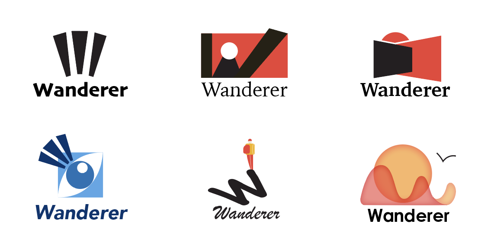
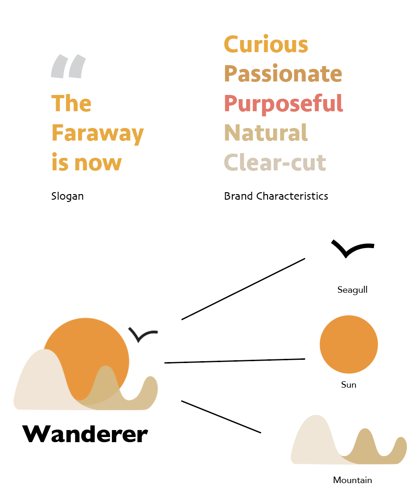

Happy Haptics
Learn More >
“Wanderer” is an imaginary lifestyle brand, the brand concerned about the very personality of those who “want to explore,” “live to experience, and “enjoy to relax.” It is a brand for the young and passionated ones with vast interests in life, nature, and creativity. “Wanderer” focuses on products for light-weight suburban discovery and anytime-ready trip, the brand encourages an attitude to be self-confident and self-motivated. In another words, “Wanderer” advocates for a genuine and purposeful way of living.
 Design TrailsThe idea behind designing the symbols and logos of “Wander“ was to deliver a familiar metaphor so that to achieve a recognizable appearance and a representative image. When designing, I tried to link closely to the brand characteristics, meanings of the name, visions of the brand, etc. Overall, for all practices here, there are three elements of symbol and logo, one is a direct transformation of “what is a wanderer,“ such as the curious eye, a fearless traveler. The second is to express the idea of being a wanderer, for instance, to explore nature, living at a moment, etc. The last is to denote the letter “W“ as it is the first character of the brand name.
 Design ElementsDefining wanderer’s spirits, it is about curiosity, passion, self-awareness, nature, environment, and a clear-cut attitude.
The symbols of “Wanderer“ adopts a familiar metaphor of a nature scenery. There are three elements included: the mountain line, the sun, and the sea gull, therefore, not only it can be interpreted as the montane scene but also one can infer it is the sea behind the mountains where raises the sun and the sea gull. The illustration thus captures a more representative image of the nature. Moreover, the continuous mountain line depicts a “W,“ as it is the first letter appears in the word “Wanderer.“
The logo typeface I chose to use is “GillSan Bold,“ such a typeface has a relatively lower X-height, which matches well with the relatively long baseline of the symbol’s, in addition, the bold-weight typeface helps with balance the visual clue of the overall brand signature, together the symbol and logo work supportively to each other and build up the brand signature.
The color scheme features the colors from nature and environment, it focuses on using analogical colors, and therefore, to create a harmonious relationship among elements in the brand symbol. Additionally, to represent the brand quality such as “Curious,” “Passionate,” etc., the color system adapts warm colors, and meanwhile delivering an approachable, enthusiastic brand image to the audiences. The primary color plate recognizes a pure white or a high contract background to present the brand identity. However, as also shown in the brand signature, the uses of the color system are rather versatile, depends on different backgrounds that the brand identity has to appear, the primary color system can be adjusted by transparency, mono style, etc.
As a lifestyle brand, the market strategy of “Wanderer“ is very diverse, therefore, its brand identity can be consistently and flexibility applied to other brand lines. Under “Wanderer“ lifestyle, there are “Wanderer Adventure,“ which produces high-end professional equipment for outdoor travelers; “Wanderer Daily,“ which is for leisure, daily wearings; and “Wanderer Magazine,“ which is an editorial collection for publishing lifestyle and traveling contents.